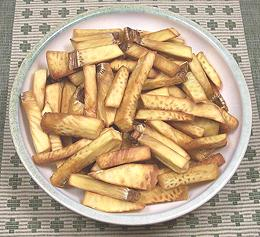

This is the tree Captain Bligh was transporting on the Bounty, from Tahiti to Jamaica to feed slaves working the sugar plantations. His crew decided instead to take the ship back to Tahiti for more nookie. He later made the voyage successfully in HMS Providence and breadfruit has been a major food item in the Caribbean ever since. It gets its name from a bread-like aroma when roasted or baked. Breadfruits grow to about 8 inches in diameter and get up to about 10 pounds, but the photo specimen was about 7 inches diameter and weighed 6-1/2 pounds,
There are two major categories of breadfruit: seeded and seedless. The seedless (see photo) is the kind you are most likely to find in markets. The seedless hybrids were distributed across the Pacific islands in prehistoric times. Clearly they could not have been spread by natural processes, being sterile. Breadfruit are small enough to grow out at the end of the branches rather than from the trunk like Jackfruit.
More on Mulberries.
Breadfruit is quite perishable and should be kept only a few days. Because it is seasonal this was a problem in tropical regions where it was the main staple. Pits were dug and lined with leaves, breadfruit flesh piled in and the pit covered. The breadfruit would ferment in the pit but remain edible even for years. This is not a practical solution for most of us.
When preparing breadfruit, keep in mind it will be exuding a sticky, glue-like latex. It's not quite as bad as Jackfruit, but do oil your knife, hands and working surface and be prepared to wash and re-oil.
A simple cooking method is simply to cut the breadfruit into chunks, discarding the core, then simmering for 30 minutes to an hour until tender. The rind is then cut off and the breadfruit used similarly to potatoes.
In Hawaii breadfruit is an alternate to taro for making poi. Called "`ulu poi". It may be made from fresh breadfruit, fermented breadfruit or a mixture of the two.
North Americans tend to prefer their breadfruit deep fried, as in the
photo to the left. To quote L, "These are so good, French fries will be
forever ruined for me".